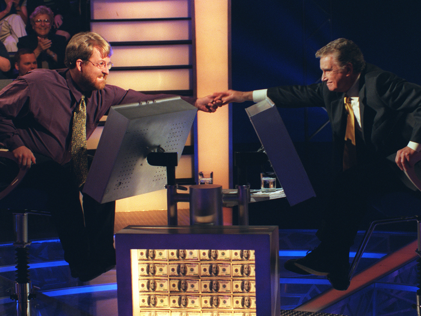
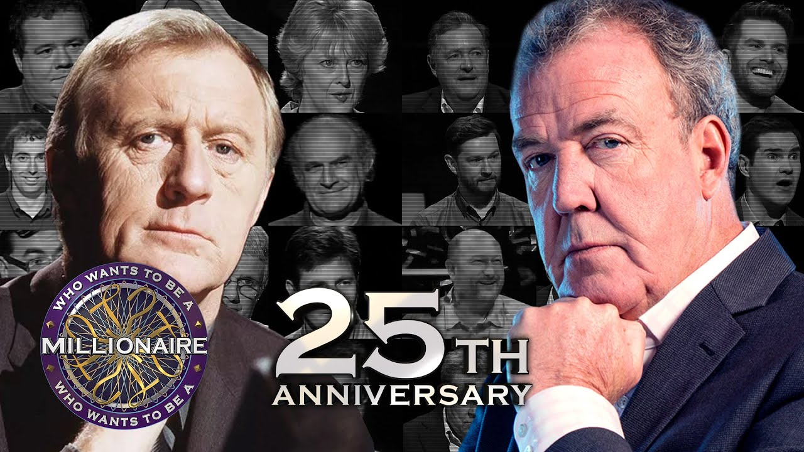

The History

Who Wants to Be a Millionaire? was launched in the UK in 1998 and quickly became a global phenomenon. Two hosts played a key role in shaping the British version: Chris Tarrant, who led the show from the beginning and helped it achieve international fame, and Jeremy Clarkson, who brought his distinctive style to the format in 2018.

Chris Tarrant was the face of the British version of Who Wants to Be a Millionaire? from 1998 to 2014. With his calm yet suspenseful hosting style, he made the quiz format unique. His iconic phrase, "Is that your final answer?" became world-famous. Tarrant’s era was marked by unforgettable moments—including the scandal surrounding Charles Ingram, who attempted to cheat his way to a million with a coughing scheme.
In 2018, Jeremy Clarkson took over as the host. Known from Top Gear and The Grand Tour, he brought his unmistakable humor and quick wit to the show. Clarkson's direct and often ironic comments led to many entertaining moments. He was particularly impressed by millionaire winner Donald Fear, who answered all the questions in record time in 2020.

Chris Tarrant and Jeremy Clarkson represent two different eras of the show. While Tarrant brought suspense and tradition, Clarkson added a modern and humorous touch. Yet one thing remains unchanged: the fascination with the quiz that captivates audiences worldwide.